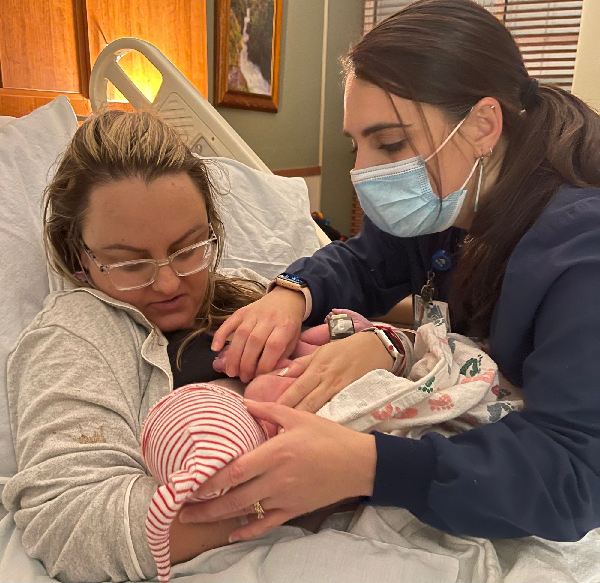

Midwife Jana Sund wore dark blue scrubs, a thick ponytail, and a tired smile into the birthing room the night my daughter was born.
Jana had assisted in the birth of my two older children, each time helping me wrestle with my vision of a perfect delivery.
Two weeks into the Covid-19 quarantine, we found out we were expecting our third child. Jana had been one of the first people we told.
My concerns about a pandemic pregnancy proved valid.
I experienced relentless nausea and vomiting for 9 months, a condition known as Hyperemesis Gravidarium (HG). As if HG wasn't enough, by August Gestational Diabetes was thrown into the mix.
I waddled into the labor and delivery department of the Kalispell Regional Medical Center the Sunday night after Thanksgiving, exhausted but ready for labor to be induced.
The Pitocin was started. My husband and I knew, it was time for this nightmare pregnancy to end.
Our daughter needed out.
After the easiest of deliveries, the loveliest little girl was placed on my chest. Lorelai LaVigne Rogness was finally here.
The placenta was out. The pizza was ordered. The worst seemed over.
For the first time in months, I was free to enjoy a meal uninhibited by nausea.
Then, suddenly something was wrong. The room began to spin, my body racked with pain, and I had an overwhelming feeling that I was slipping away.
“Something is not right,” my hoarse voice whispered.
It was quiet on the floor that evening. We were tucked in for the night. My husband sat rocking our baby girl. The last thing I heard him say was something about bidet toilets.
“Call the nurse,” I rasped, “Call Jana. Tell my girlfriends to pray. Please do it now.”
Within minutes, a nurse arrived, performed a few procedures and realized the gravity of the situation. She alerted the on-call provider.
“It’s going to be OK Honie, Jana is on her way.”
Relief rushed through me. She was my friend. She was my provider. She would save my life.
Jana arrived and a trauma doctor was dispatched to the room. I needed a team.
As I screamed and begged for pain relief, Jana pulled out a 1200ml blood clot, the size of a liter of Diet Coke. By the time the bleeding was under control, I had lost too much blood. I would require a transfusion.
Hours after this terrifying ordeal, I pushed off the soiled sheets and told Jana that I smelled like death.
“You do friend,” she said to me, “but you lost a lot of blood and it got messy.”
After sending my husband on a quest to find clean nursing bras and sweatpants, she gave me a sponge bath. With a gentle touch she washed away the grime, gore, and metallic smell of mortality.
“That blood clot was scary wasn’t it?” I asked her quietly.
“Well Maggie, you’re not the first woman to have a postpartum hemorrhage and you won’t be the last, you just happen to be my friend. And yes, it was awful.”
Regardless of how scary it may have felt, a sisterhood was in that trauma room, and they had my back.
I was never alone.
Experiencing pregnancy and birth in a pandemic has left me with new insights.
For centuries soldiers have gone into battle and women have gone into motherhood with equal courage.
Like the battlefield, birth is bloody and intense.
Women shouldn’t have to face it alone, and thankfully seldom do.
